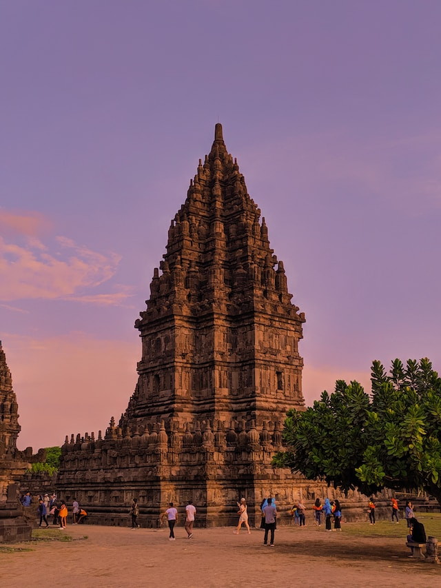

Borobudur Temple

Borobudur Temple is a 9th-century Mahayana Buddhist temple located in Central Java, Indonesia. It is one of the largest Buddhist temples in the world and a UNESCO World Heritage Site.
Prambanan Temple
Prambanan Temple, also known as Rara Jonggrang, is a 9th-century Hindu temple compound located in Central Java, Indonesia. It is the largest Hindu temple in Indonesia and a UNESCO World Heritage Site.
Ulun Danu Beratan Temple
Ulun Danu Beratan Temple is a water temple located on the shores of Lake Beratan in Bali, Indonesia. It is dedicated to the goddess Dewi Danu and is a significant site for Hindu Balinese ceremonies.